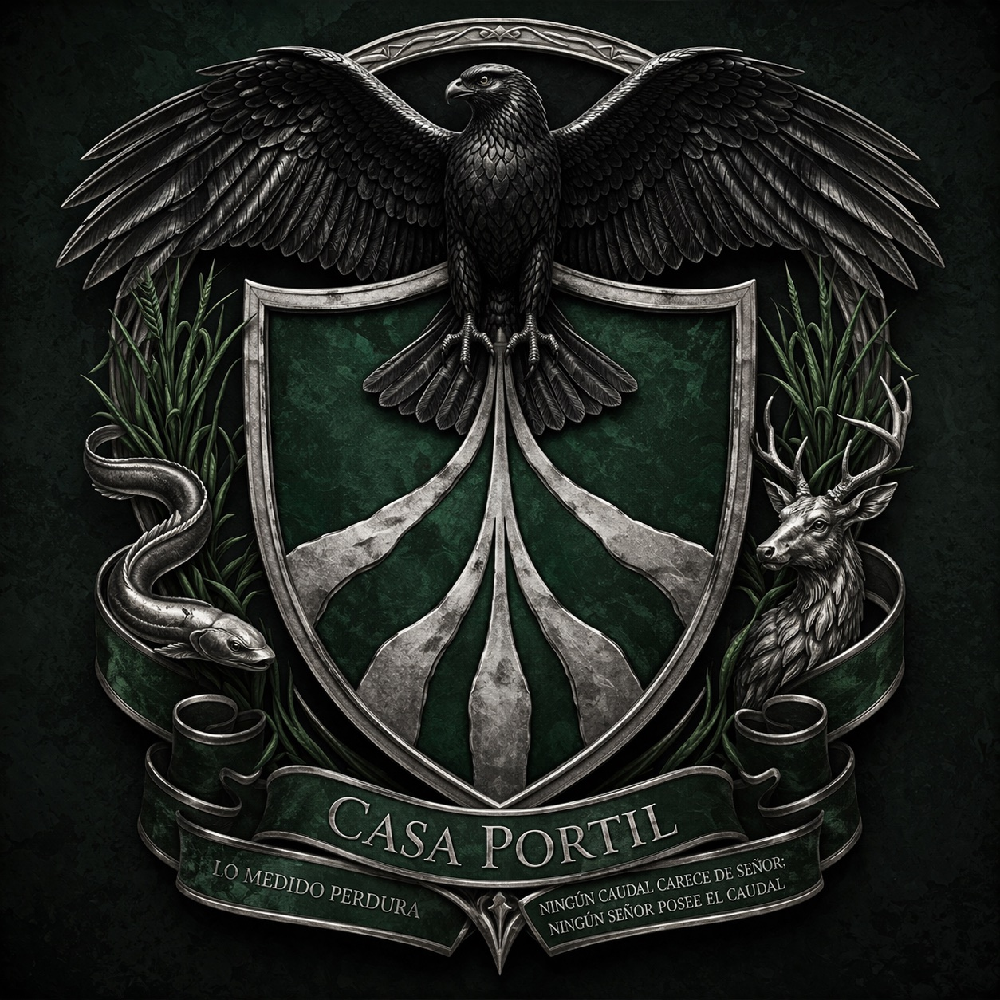

Casa Portil — Archivo VivoEl Archivo Vivo no es una biblioteca. Es una orden de memoristas entrenados para retener, verificar y rearticular precedentes. Quien quiera acceder al dossier completo debe demostrar que merece leer lo que contiene.
— Custodio de Archivos Mayores, Palacio de las Compuertas
Cinco pruebas. Lore, trivia y decisiones.
Tus respuestas ayudan a dar forma al juego.
Tus respuestas se guardan como feedback para el equipo de desarrollo.
No se cederán a terceros.
"El agua retenida demasiado tiempo deja de ser custodia y se convierte en cárcel. El conocimiento compartido, en cambio, multiplica el caudal."
— Lecturas de Nacar, Sor Valea